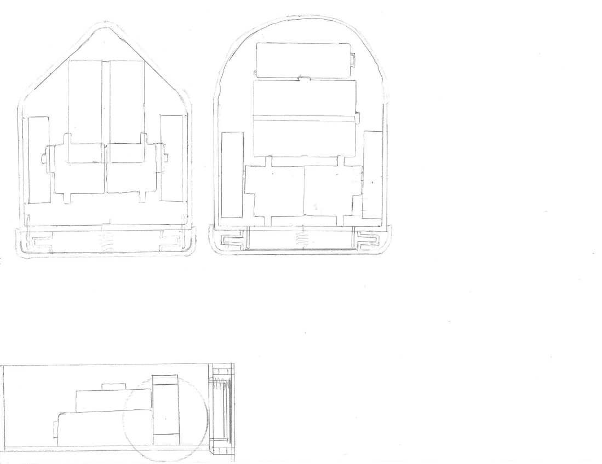
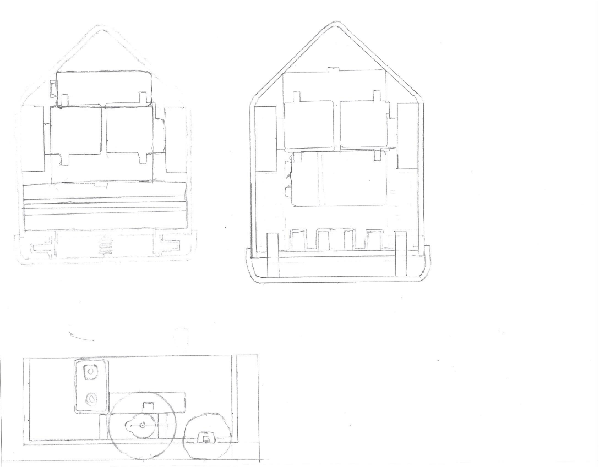
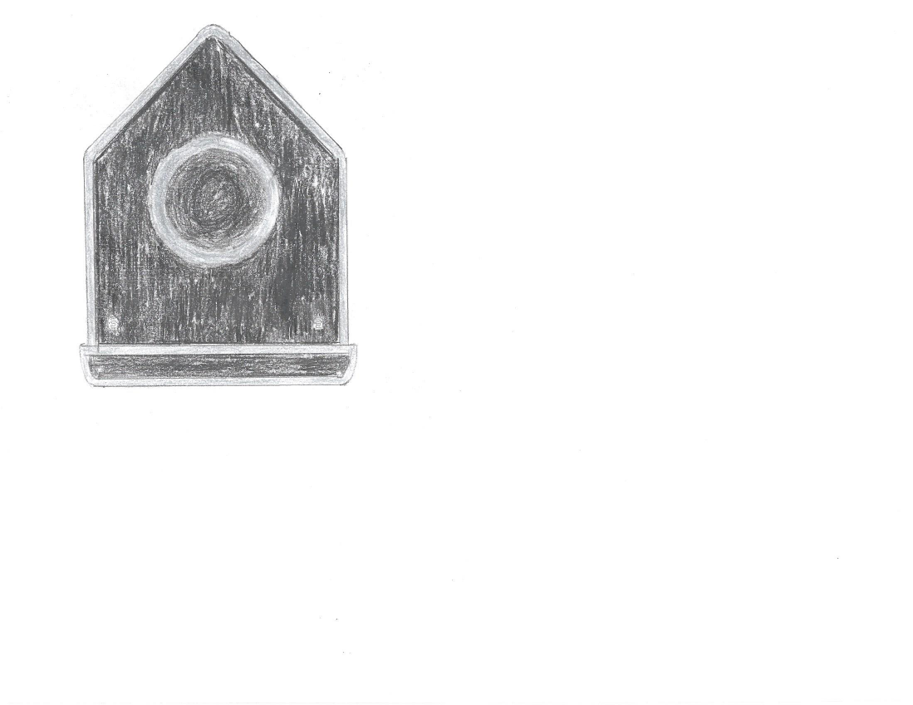
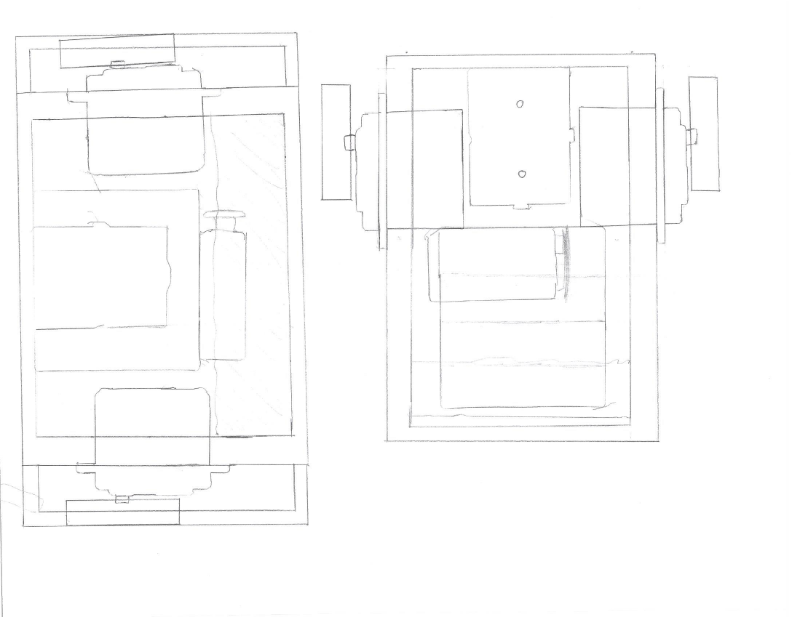
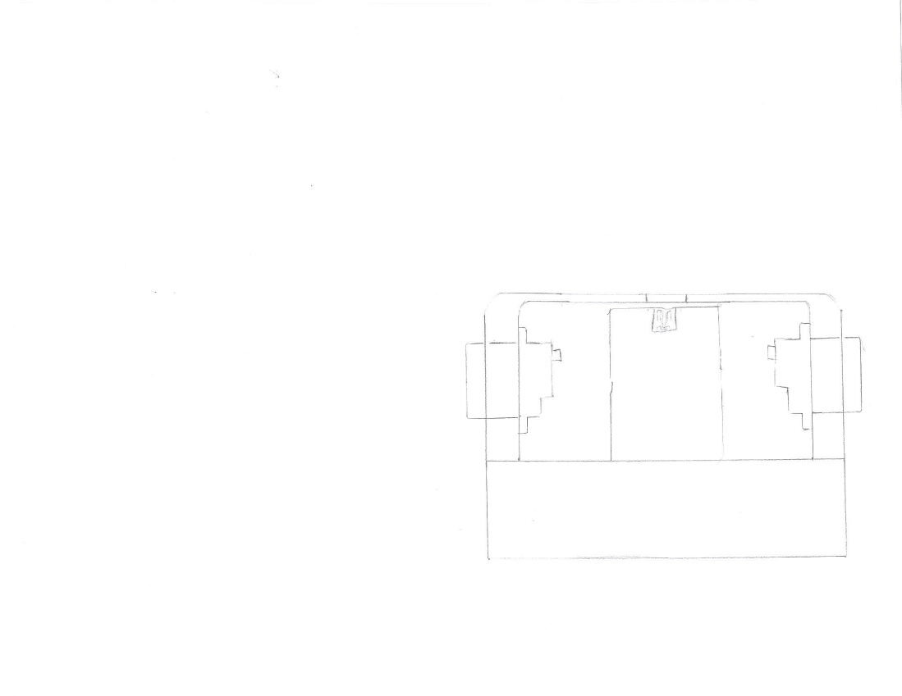
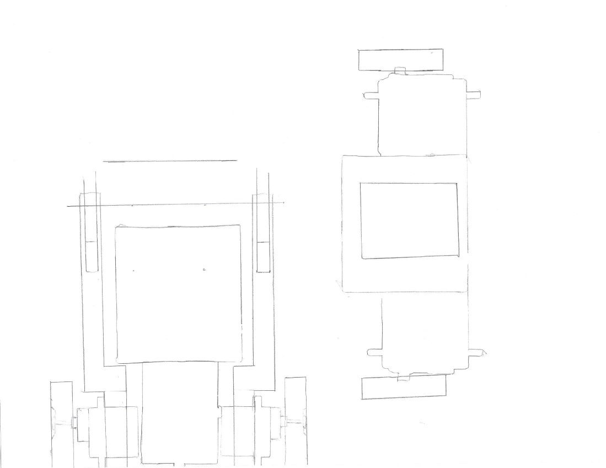
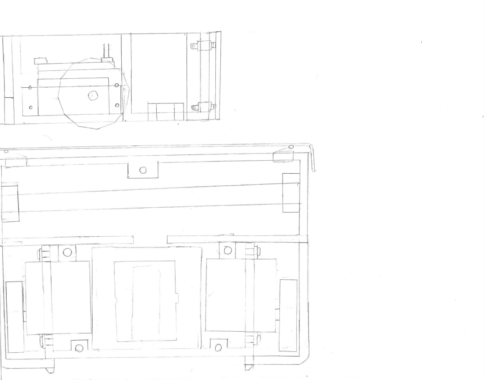
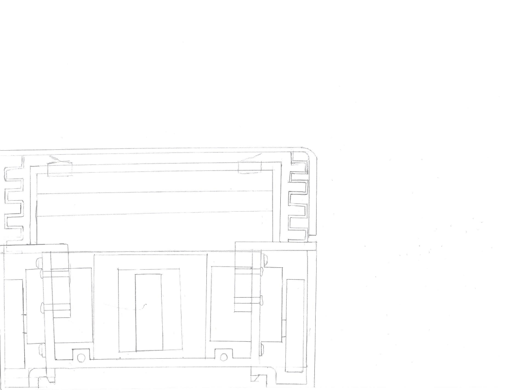
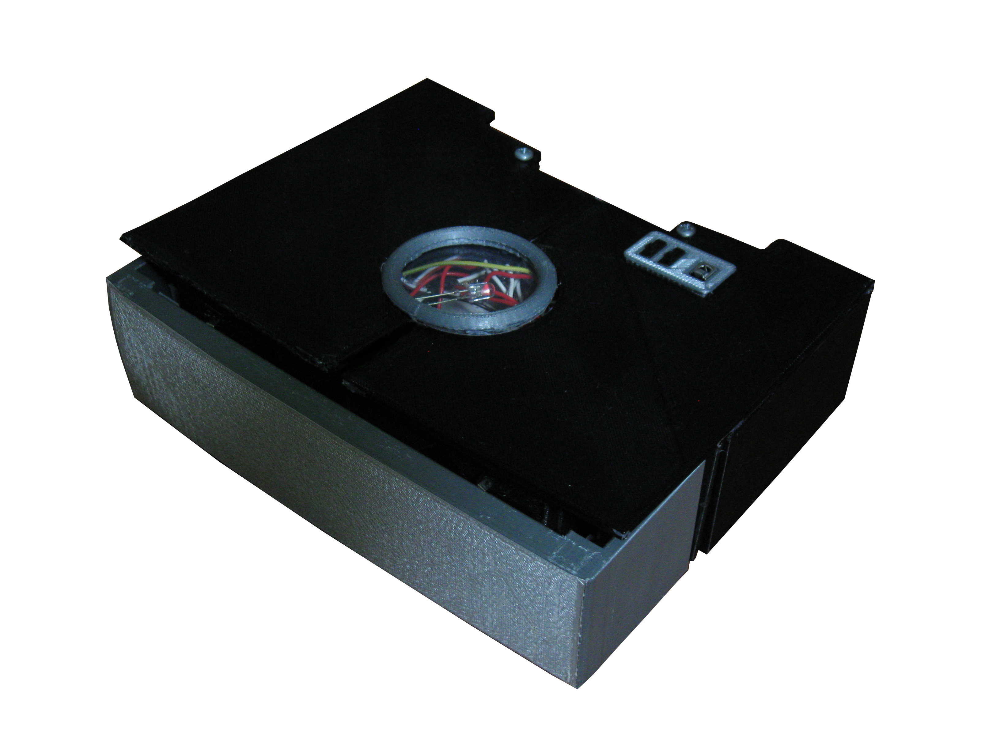

RPR's Design and Conceptualisation
RPR (Rag Pushing Robot) was developed after the creation of V.O.R.P. It was intended to be a more practical and useful robot than V.O.R.P. Here is a diagram of three of the earliest designs. Their wheels are mounted internally, and are driven by continuous rotation servos. There is a place for a mini breadboard, and each has a front bumper that was designed to sense collisions. A 9V battery was intended to power each of them. Each of these designs were impractically small.
These designs are a slight expansion upon the last ones. They are slightly larger, and now contain a small sweeping device in the front. This sweeping device is intended to be entirely passive. It has no moving parts. It simply sweeps along the floor like an autonomous broom.
This is a color image if the externals. Two photoresistors are visible in the front. They were to allow the robot to know whether it is under something, perhaps a table or a sofa.
This drawing was an attempt to examine the advantages/disadvantages of wide vs long designs.
This revision was never finished.
Here are some more unfinished designs.
Here is a design that is very close to being the final design. The design has been expanded, and most of the 3D printed parts have been modularized so that they can be printed in smaller sections. The drive motors are now standard sized continuous rotation servos. An Arduino Nano sits on top of a 4 AA battery pack. Near the front bumper, there is a wooden dowel mounted horizontally. A rag is intended to be wrapped around this dowel. RPR earned its name (Rag Pushing Robot) from the fact that it pushes this rag around to clean.
The only revision worth noting about this final design was a change to the front bumper. 3D printed springs have been added to either side to allow it to compress more effectively. To accommodate this change, the space for the rag has become slightly shorter.

Click For More Information On RPR